传说起源
艺人传说，人龙舞始于明末，以身体模拟龙形，在年例与庙会中起舞。
人相连，而成龙。
不画一条龙，而是画人如何搭成龙。以双 IP、五色体系与 11 类周边，把湛江东海岛的身体民俗，翻译成年轻人愿意带走的生活。
它没有布龙，也没有竹骨。几十至数百人肩背相叠、以身相接。龙头高昂，龙身翻腾，龙尾劲摆——人即龙，龙即人。
FIELD NOTE · 001“人龙舞”流传于广东湛江东海岛一带，2006 年列入第一批国家级非物质文化遗产名录（龙舞，编号 Ⅲ-4），素有“东方一绝”之誉。
它最动人的地方，不在于龙形之巨，而在于结构的诚实：每一个人都是龙身的一节，任何一节的松动都会让整条龙失形。这种“个体连接成整体”的组织方式，既是海岛宗族社会的缩影，也是岭南民俗中最具当代转译价值的视觉母题。
“ 不做文物的复刻，
而做精神的再造。 —— 设计主张
龙舞（湛江人龙舞）
国家级非遗项目编号
第一批国家级
非物质文化遗产名录
舞者以身体相接
搭成一条长龙
起龙、龙点头
龙穿云、龙卷浪
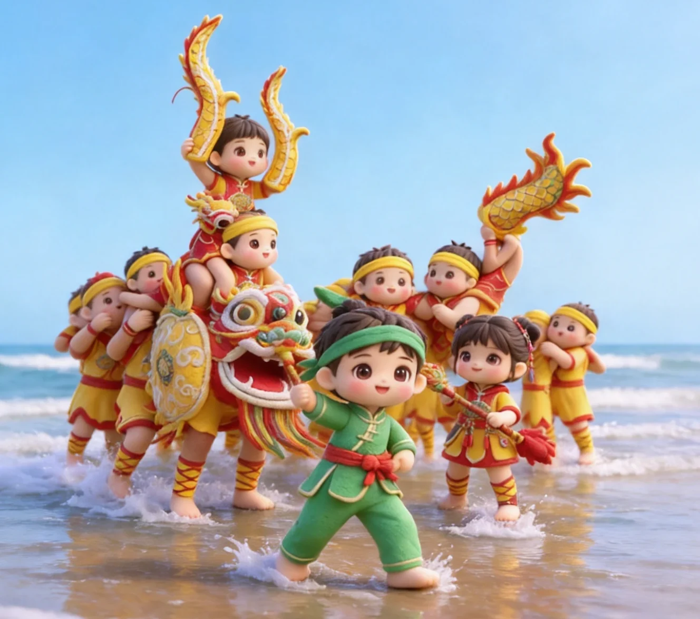
艺人传说，人龙舞始于明末，以身体模拟龙形，在年例与庙会中起舞。
随宗族与年例民俗兴盛，形成完整的表演程式与锣鼓号角。
列入第一批国家级非物质文化遗产名录，项目编号 Ⅲ-4。
双 IP、视觉系统与 11 类周边，让身体民俗重新进入年轻人的日常。
人链是单元，龙头是方向，海浪是动势。把这三件事拆开，再重新连接，就得到一套可以无限生长的图形语法。
THE METHOD · 002个体是独立的点，尚未发生关系。每一个舞者都是可识别的“人”，也是龙身最小的计量单位。
圆形代表人（单元），弧线代表连接（关系），重复与错位代表生长（动势）。
先有可识别的个体，才有可以被连接的关系。IP 的三视图、统一比例与描边，正是“单元”的标准化。
弧线把手、肩、背连接在一起。图形里的连接线不是装饰，它就是人龙舞得以成立的力学关系。
当单元开始重复、错位、起伏，结构就有了动势。主图形可以横向铺满袋面，也可以缩成徽章上的一个圆。
小湛龙是舞生，小玲珑是舞旦。共享 2.5 头身、描边粗细与高光位置，差异只落在色相、发型与道具上——同构异色，才能并肩成一条龙。
DUAL IP · 003活泼奔放 · 喜欢传统文化 · 领舞者
“活泼奔放，喜欢传统文化，希望把非遗文化传播给更多人。”
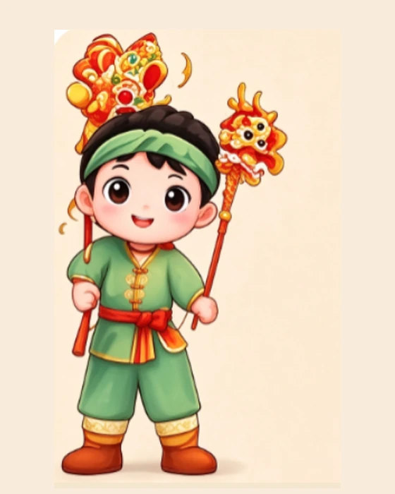
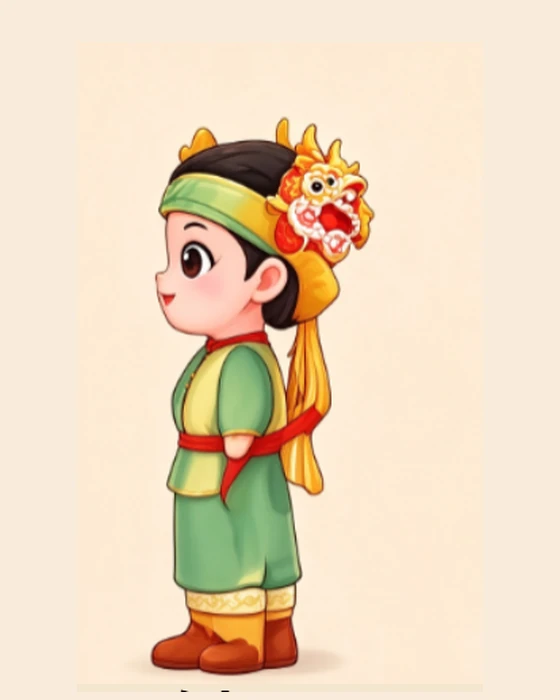
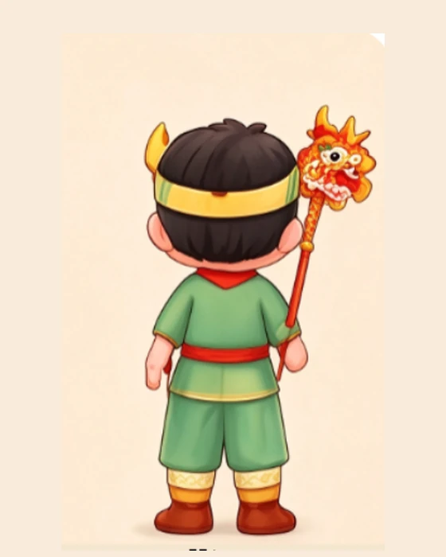
温婉灵动 · 情系龙舞 · 传承者
“温婉娴静，情系龙舞；坚守传承，传扬非遗。”
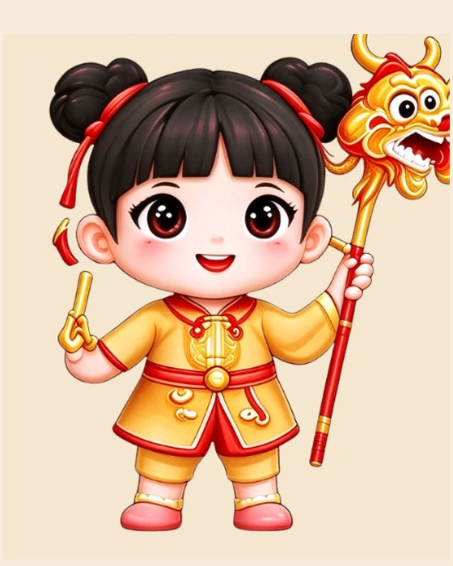
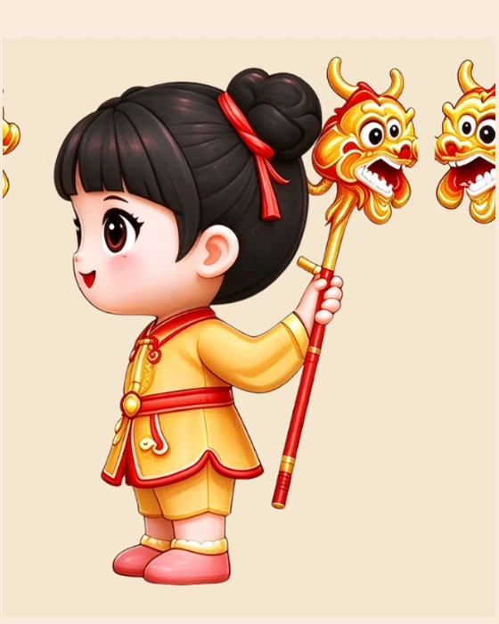
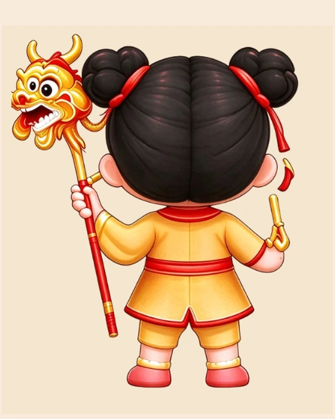
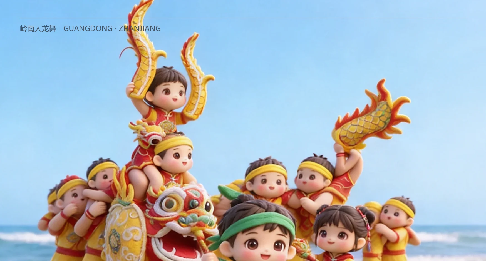
从现场观察到龙元素，再到动漫风格；从圆形徽记到龙纹、云纹，最后收束成一朵龙云。所有图形共享同一套曲率与收笔方式。
VISUAL SYSTEM · 004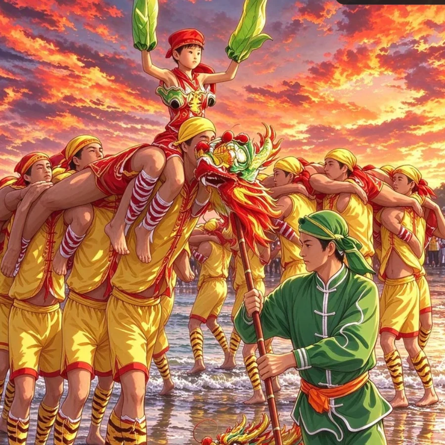
01身体结构与动势
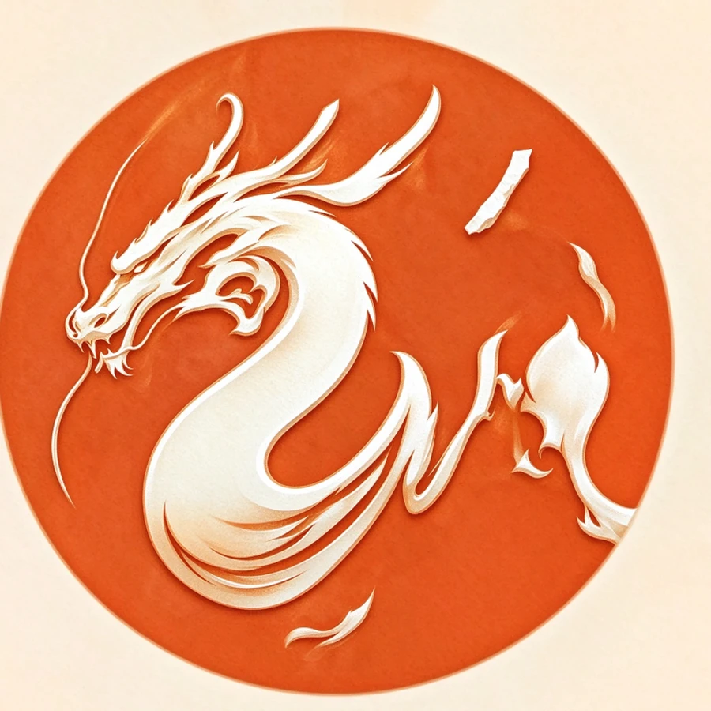
02角、须、鳞与盘旋
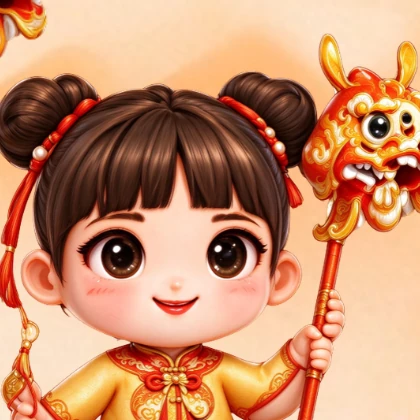
03当代的角色语言
双 IP × 辅助图形一个可以被反复使用的文化符号
由圆形徽记出发，经龙纹、云纹两次变形，得到可以无限拼接的底纹；再把底纹反向收束成一朵“龙云”。
圆形徽记把龙首、人链与海浪收进一个完整的圆。三个人形，是这条龙最小的结构单位。
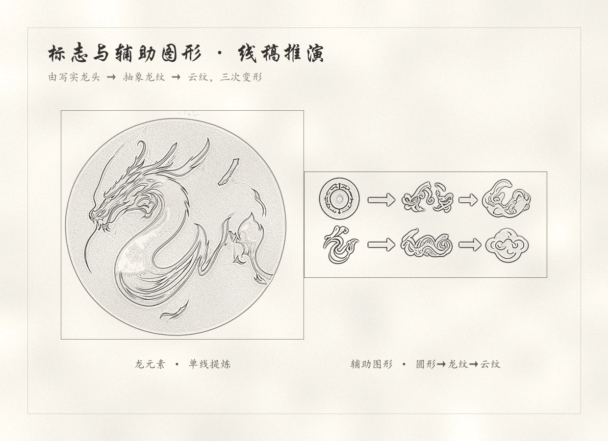
毛笔手写体负责“非遗”的笔锋与飞白；无衬线黑体负责“可用”的信息层。传统感与现代性，在双轨字体秩序里各司其职。
主色取自岭南年节与海岛日落。五色共享同一套明度关系，浅色托举图形，深色承担信息。
周边从 4 类扩展到 11 类，按穿戴、携带、桌面、纸品与收藏四个场景展开。同一图形换载体，检验它能不能在 1.5 cm 的钥匙扣与 50 cm 的帆布袋上同样成立。
11 PIECES · 005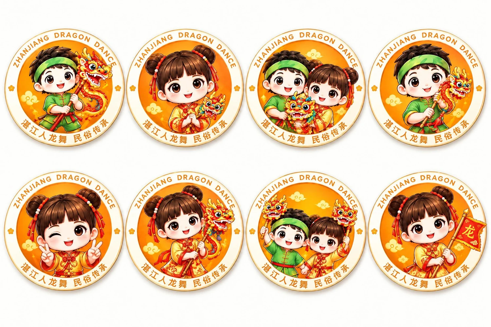
收藏ENAMEL BADGES
八枚徽章按“单体—组合—场景”三种构图组织：单体看角色，组合看关系，场景看故事。同一色系下用底纹变化区分，既成系列，又不至于雷同。
产品单价与价格带为定位示意，实际以打样与报价为准。点击任意产品可查看材质、工艺与规格。
把展板上的漂亮效果翻译成印前参数：1440 dpi、ΔE ≤ 3、透光率 ≥ 88%、3 mm 出血。四条打样门槛，决定方案能否从概念走向商品。
MATERIAL & MAKING · 006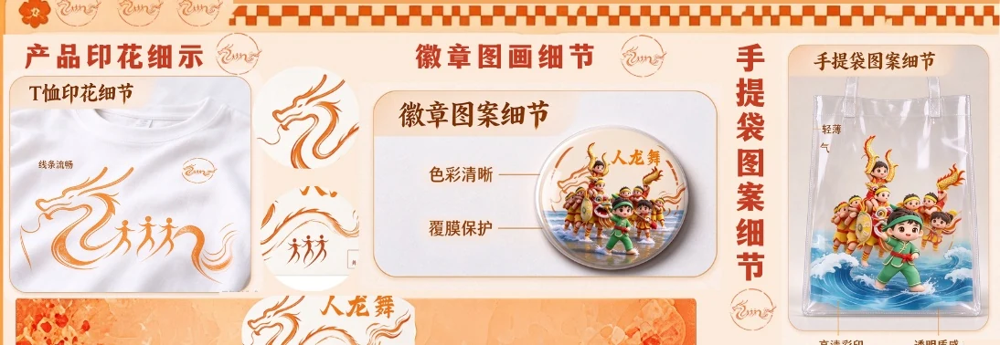
1440 dpi，渐变不断层。用于 T 恤与帆布袋，适合多色、小批量与快速打样。
TEE / TOTE · DTG网点点阵稳定，局部光油提亮。用于门票、体验券与明信片，控制成本且便于编号改版。
PAPER · CMYK在透明 PVC 上直接成像，兼顾通透与耐久。袋内图景与商品互为背景。
PVC 0.3 MM · UV马口铁 0.5 mm 或锌合金，冲压后覆哑光膜。色彩清晰，耐磨，适合高密度图案。
BADGE · STAMPING手机壳采用 TPU 软边 + PC 硬背，IMD 覆膜耐刮；钥匙扣双面异图，滴胶保护。
PHONE / KEYRING贴纸按主图形外轮廓模切，3 mm 透明亚克力双面 UV 印刷。低单价、高自由度。
DIE-CUT / ACRYLIC任何一件新品打样前，都要过一遍下面五项。五项全部确认，方案才具备进入量产的资格。
两个月，六个阶段，九轮迭代。从草案发散到文化校准、比例修正与工艺适配，每一步都留有痕迹。草图不是装饰，而是把设计决策摊开：哪一版胖了、哪一版颜色重了、哪一段文字被挪走了。
FROM DRAFT TO FINAL · 007以文献与影像为主，梳理源流、表演程式与身体结构。把“人链”拆成单元、连接、重复三个变量，把“龙头”拆成冠、角、须、目四个特征，把“海浪”拆成一条有节奏的波线。
从早期概念稿到双展板定稿：删掉满版英文装饰，删掉互相打架的三套配色；加上一条能生长的线，和两个会说话的角色。拖动中间的手柄查看变化。
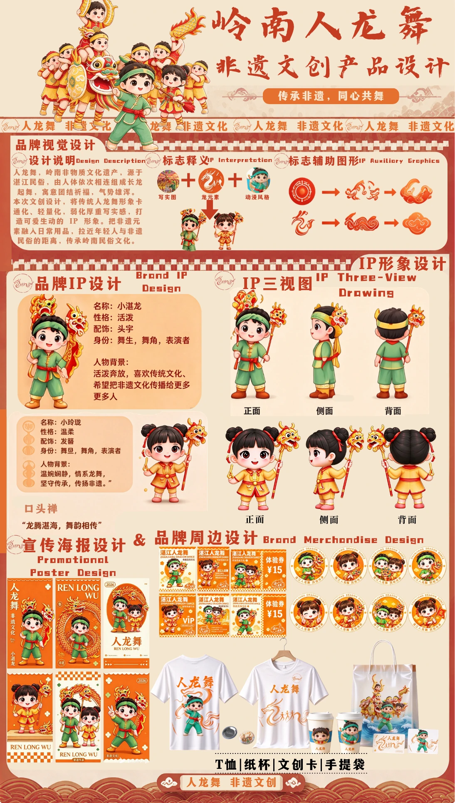
DRAG / 拖动查看 · 左侧为早期概念稿，右侧为定稿展板
从角色铅笔稿、三视图结构线稿，到标志推演与版式骨架。点击任意图版，可放大查看。
左板回答“它长什么样”，右板回答“它怎么做、值多少”。两板并置，构成从品牌视觉到产品工艺的完整闭环。
1094 × 1928 PX × 2 · 008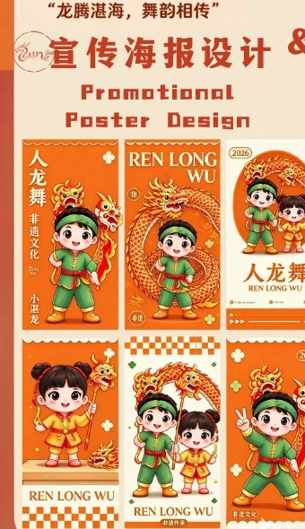
六款海报共用同一套角色、色号与版式骨架：有人形特写，也有龙纹铺满。它们把展板上的主图形压缩成社交媒体的竖向比例，让非遗在手机屏幕里也能被一眼认出。
非遗的当代价值，最终要落在“人”与“产业”两端：年轻人是否愿意走近，地方是否能形成可持续的内容与商品供给。
CULTURE TO INDUSTRY · 009准确的知识表述与精神内核：协作、团结、以身成龙。
交付：文化准确性可复用的图形、角色与规范：双 IP、五色、标志与辅助图形。
交付：视觉系统可售卖的商品与场景：11 类周边、六种工艺、三级价格带。
交付：产品线通过 Q 版双 IP、图解式展板与可参与的周边，把“观看”转化为“接触”，再转化为“理解”。
非遗活化 → 传统转译 → 贴近生活从徽章、贴纸到 T 恤、手提袋，三级价格带共享视觉与工艺规范，让“展板上的图”真正变成“货架上的物”。
引流款 / 主力款 / 礼赠款面向年轻人、社交媒体与日常场景。当一个人因为一枚徽章去搜索“人龙舞是什么”，传承的链路已经开始运转。
高频曝光 · 低决策 · 可分享把“人链”抽象为图形语法，用同构异色建立双 IP，以双语锁定与工艺先行完成从文化到商品的闭环。
人链语法 / 双 IP / 工艺先行人龙舞的美，
在于它必须由
很多人共同完成。
设计亦然。它从来不是一个人的独舞，而是文化、工艺、传播与商业的共同搭接。让“岭南人龙舞”从海岛走向更远的日常，也让每一个拿起它的人，成为这条龙身上的一节。